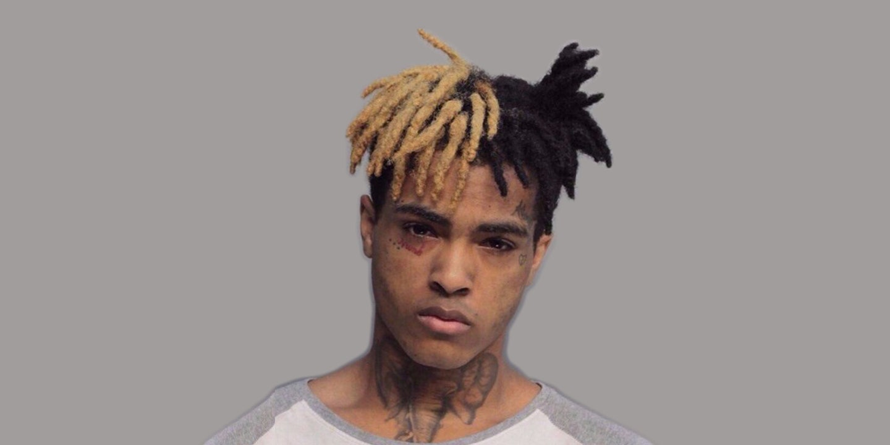

Jahseh Dwayne Ricardo Onfroy (January 23, 1998 – June 18, 2018), known professionally as XXXTentacion,[b] was an American rapper, singer, and songwriter. Despite being a controversial figure due to his widely publicized legal issues, XXXTentacion gained a cult following among his young fanbase during his short career through his depression and alienation-themed music. He was often credited by critics and fans for his musical versatility, with his music exploring emo, trap, lo-fi, indie rock, nu metal, hip hop, R&B and punk rock. Born in Plantation, Florida, XXXTentacion spent most of his childhood in Lauderhill. He began writing music after being released from a juvenile detention center and soon started his music career on SoundCloud in 2013, employing styles and techniques that were unconventional in rap music, such as distortion and heavy guitar-backed instrumentals drawing inspiration from third-wave emo and grunge. In 2014, he formed the underground collective Members Only and alongside other members of the collective he soon became a popular figure in SoundCloud rap, a trap music scene that takes elements of lo-fi music and harsh 808s
